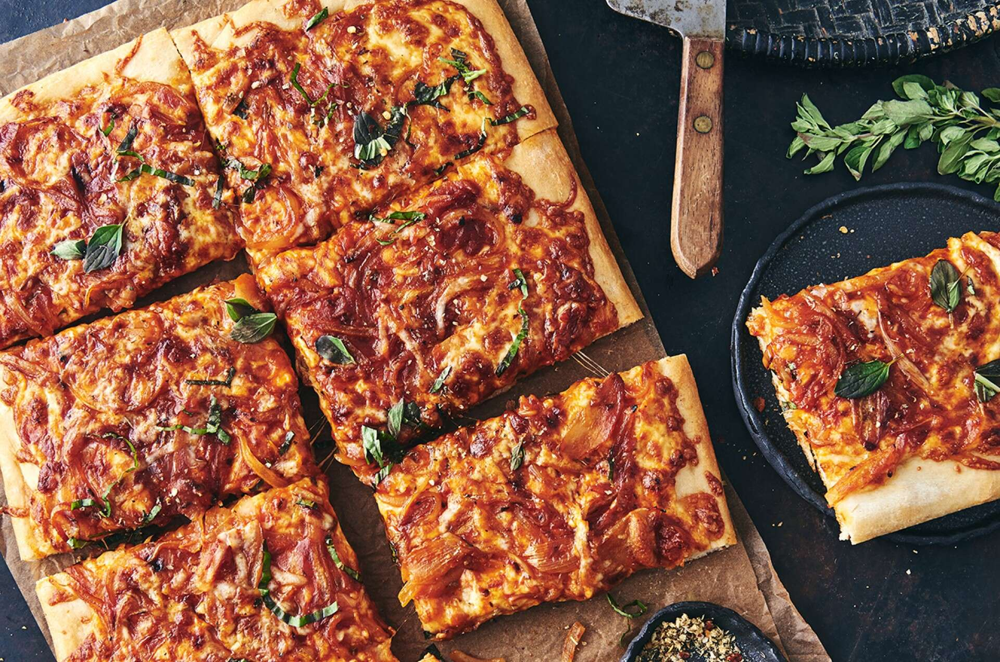

Sicilian pizza is a bread lover's dream. The crust of a pan-baked Sicilian pie is similar to focaccia bread around offers the perfect crunch/chew ratio to support the zesty sauce and melted cheese on top. If you've never had a Sicilian slice before, you need to change that ASAP.
The authentic Sicilian pizza made in Italy is called sfincione, which translates to a thick sponge.
The Dough is thick but spongy and fluffy because of the longer proofing time, and it resembles the focaccia bread dough
The sauce is made with crushed tomatoes, onions, ancovies herbs, and hard cheese like caciocavallo and toma. Often, the cheese goes on the dough first, and the tomatoes are put on top.
No rolling or tossing is required.
A slice of delicious Sicilian Pizza can have from 250 to 500 calories.
Return Home